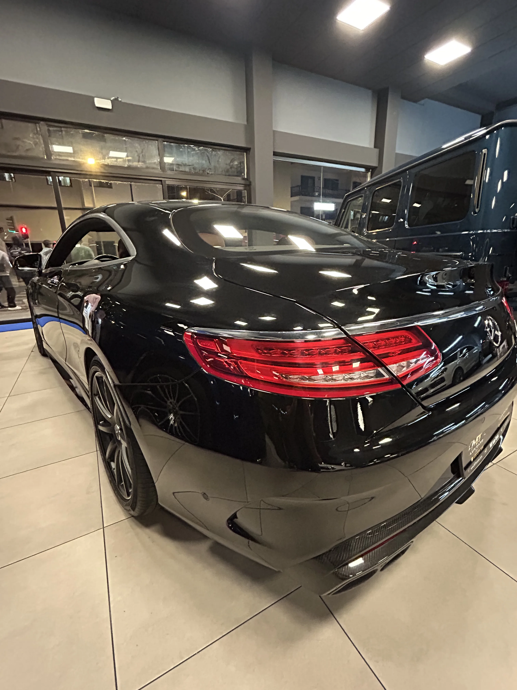

01
Eliges tu pieza y solicitas el estudio
Con el vehículo decidido, nos indicas que quieres financiarlo. Preparamos la solicitud con los datos de la operación y la trasladamos a la entidad.
Blog — Financiación
● Julio 2026 — Lectura de 4 min
MT Lux Cars — Arrecife, Lanzarote

Existe la idea de que financiar un coche es lo que hace quien no puede pagarlo al contado. En el mercado de alta gama, la realidad es justo la contraria: muchos de nuestros clientes financian precisamente porque pueden pagar al contado, y prefieren no hacerlo.
La razón es sencilla: liquidez. Inmovilizar una cantidad importante en un solo pago significa descapitalizarse, y para quien tiene su dinero trabajando —en su negocio, en inversiones o simplemente como colchón— repartir el importe en cuotas suele ser la decisión más racional. En MT Lux Cars lo vemos a diario: financiar una pieza de nuestra exposición no es una renuncia, es una forma de comprar con la cabeza.
Hablamos de un crédito al consumo aplicado a la compra de un vehículo de ocasión de alta gama. La entidad financiera adelanta el importe del coche (o una parte, si aportas entrada) y tú lo devuelves en cuotas mensuales durante el plazo acordado. El vehículo es tuyo desde el primer día, con su documentación y su garantía, exactamente igual que si lo hubieras pagado al contado.
Que el coche sea seminuevo no cambia la mecánica del préstamo. Lo que sí valora la entidad es que la operación esté bien documentada: procedencia clara, historial verificado y un concesionario que responda. Ahí es donde nuestra forma de trabajar juega a tu favor.
Trabajamos con Banco Santander, y el recorrido es más corto de lo que la mayoría espera. No tienes que ir a ninguna oficina bancaria: la gestión se inicia con nosotros, en el propio concesionario.
01
Con el vehículo decidido, nos indicas que quieres financiarlo. Preparamos la solicitud con los datos de la operación y la trasladamos a la entidad.
02
Como en cualquier crédito, el banco analiza tu capacidad de pago: ingresos, situación laboral o empresarial y documentación identificativa. Es un trámite estándar, no un interrogatorio.
03
Con la operación aprobada, tienes sobre la mesa las condiciones concretas de tu caso: importe, entrada, plazo y cuota. Las revisas con calma y decides sin presión.
04
Formalizada la financiación, el vehículo es tuyo. Sales del concesionario con las llaves y con un plan de pagos que conoces al detalle desde el primer día.
La entrada. Aportar una parte del importe al inicio reduce el capital financiado y, con él, la cuota mensual. No siempre es obligatoria, pero conviene decidir cuánto quieres inmovilizar y cuánto prefieres conservar líquido.
El plazo. Un plazo más largo alivia la cuota mensual; uno más corto reduce el coste total de la operación. No hay una respuesta universal: depende de tu flujo de ingresos y de cuánto tiempo piensas conservar el vehículo.
El seguro. Un coche de alta gama financiado debe ir bien asegurado, y muchas operaciones lo contemplan desde el inicio. Es un coste que conviene tener presente en el cálculo global, no descubrirlo después de firmar.
Trabajamos con Banco Santander para ofrecerte financiación adaptada a tu compra. Las condiciones se estudian caso a caso: no publicamos cifras genéricas porque cada operación es distinta. Consulta con nosotros las condiciones actualizadas y personalizadas para tu situación.
La mejor forma de saber si financiar te conviene no es hacer cuentas con cifras de internet, sino pedir un estudio real sobre el coche real que te interesa. En MT Lux Cars te lo preparamos sin compromiso: nos cuentas qué pieza tienes en mente y qué esquema de pago te encajaría, y volvemos con una propuesta concreta que puedas comparar con el pago al contado.
Si ya has visto un vehículo en nuestra exposición de Arrecife —o quieres que busquemos uno por ti—, escríbenos. Una conversación de diez minutos suele resolver más dudas que una tarde entera de simuladores.
Empieza hoy
Cuéntanos qué buscas y nos encargamos del resto. Asesoramiento directo, sin intermediarios.
Contactar ahora